Code
mu.A = 0.175
sig.A = 0.258
sig2.A = sig.A^2
mu.B = 0.055
sig.B = 0.115
sig2.B = sig.B^2
rho.AB = -0.164
sig.AB = rho.AB*sig.A*sig.BUpdated: September 10, 2026 Copyright © Eric Zivot 2026
Chapters Chapter 7 through Chapter 9 focused on the development and estimation of, and the statistical inference for, the GWN model for asset returns. In this chapter, I use the GWN model for asset returns as the basis for the quantitative analysis of portfolios and asset allocation. Specifically, I introduce the mean-variance portfolio analysis framework originally developed by Harry Markowitz.1 This framework is the widely used in academia and industry and is covered in most standard textbooks on investment analysis such as (Bodie, Kane, and Marcus 2013), (Elton et al. 2014), and (Sharpe 1999). In this framework, asset returns are assumed to be normally distributed and so investor preferences over portfolios of assets depend only on the expected return and variance of the portfolio returns. Investors are assumed to like portfolio with high mean returns but dislike portfolio with high return variances. Since portfolios that have high (low) expected returns tend to have high (low) variances investors face a mean-variance tradeoff between different portfolios. Markowitz’s mean-variance portfolio theory quantifies this mean-variance tradeoff and provides a methodology that investors can use to determine optimal portfolio choice.
This chapter introduces Markowitz’s mean-variance portfolio theory in a simplified setting where there are only two risky assets and a single risk-free asset. This allows us to present the main results of mean-variance portfolio theory graphically and with simple algebra. However, as you shall see in the next chapter, many of the analytic results I derive for portfolios of two risky assets, and for portfolios of two risky assets and a single risk-free asset, can be applied to situations in which there are many risky assets and a single risk-free asset. Therefore, it is highly beneficial to study and understand well the portfolio theory results in the simplified framework of this chapter.
This chapter is organized as follows. In Section 10.2 I review expected return, variance and value-at-risk calculations for portfolios of two risky assets. In Section 10.3 I introduce mean-variance portfolio analysis for portfolios of two risky assets. The portfolio risk-return frontier is introduced, efficient portfolios are defined, and the global minimum variance portfolio is defined. In Section 10.4 I present the analysis of portfolios with a single risky asset and a risk-free asset. I also define the Sharpe ratio/slope of a risky asset and illustrate it graphically. I discuss portfolios of two risky assets and a risk-free asset, define the The tangency portfolio, present the Mutual Fund Separation Theorem in Section 10.5 I give a brief illustration of the theory to a real world two asset portfolio of stocks and bonds in Section 10.6. In the Appendix I review some basic results on constrained optimization of functions that I use in the chapter.
The R packages I use in this chapter are introcompfinr, kableExtra, knitr,
and PerformanceAnalytics. Make sure these packages are installed and loaded in R before replicating the chapter examples.
To develop a quantitative methodology for investment analysis, I make the following assumptions regarding the probability distribution of asset returns and the behavior of investors:
The first assumption is supported by the stylized facts of asset returns for investment horizons of at least a month as discussed in Chapter Chapter 5. The second assumption can be thought of as assuming that investors have access to high quality information that they can use to determine expected returns, variances, and covariances. For example, investors can download asset price data from finance.yahoo.com and compute estimates of expected returns, variances, and covariances using sample statistics. Two points are relevant for the third assumption. First, if the distribution of assets returns is jointly normal then the probability distribution of returns is completely characterized by means, variances, and covariances. Second, the third assumption describes the mean-variance trade-off investors face. All else equal, investors prefer assets that have the highest expected return. However, as you have seen, assets with high expected returns tend to also have high variances. High variance represents more uncertainty about future return and it is assumed that investors do not like uncertainty about future return. That is, I assume that investors are risk averse.
Consider the following investment problem. You can invest in two assets A (Amazon stock) and B (Boeing stock) over the next year, and you want to know how much to invest in each asset to make the investor most happy given the assumptions about return distributions and risk preferences from the previous sub-section. Let \(R_{A}\) and \(R_{B}\) denote the annual simple returns on assets A and B, respectively.2 These returns are to be treated as random variables because the returns will not be realized until the end-of-the year. I assume that the returns \(R_{A}\) and \(R_{B}\) are jointly normally distributed, and that I have the following information about the means, variances, and covariances of the probability distribution of the two returns:
\[ \mu_{A} =E[R_{A}],~\sigma_{A}^{2}=\mathrm{var}(R_{A}),~\mu_{B}=E[R_{B}],~\sigma_{B}^{2}=\mathrm{var}(R_{B}), \tag{10.1}\] \[ \sigma_{AB} =\mathrm{cov}(R_{A},R_{B}),~\rho_{AB}=\mathrm{cor}(R_{A},R_{B})=\frac{\sigma_{AB}}{\sigma_{A}\sigma_{B}}. \tag{10.2}\]
I assume that these values are taken as given. In practice, they can be estimated from historical return data for the two stocks, or they can be subjective guesses by the investor.
The expected returns, \(\mu_{A}\) and \(\mu_{B}\), are our best guesses for the annual returns on each of the assets. However, because the investment returns are random variables you must recognize that the realized returns may be different from our expectations. The variances, \(\sigma_{A}^{2}\) and \(\sigma_{B}^{2}\), provide measures of the uncertainty associated with these annual returns. You can also think of the variances as measuring the risk associated with the investments. Assets with high return variability (or volatility) are often thought to be risky, and assets with low return volatility are often thought to be safe. The covariance \(\sigma_{AB}\) gives us information about the direction of any linear dependence between returns. If \(\sigma_{AB}>0\) then the two returns tend to move in the same direction; if \(\sigma_{AB}<0\) the returns tend to move in opposite directions; if \(\sigma_{AB}=0\) then the returns tend to move independently. The strength of the dependence between the returns is measured by the correlation coefficient \(\rho_{AB}\). If \(\rho_{AB}\) is close to one in absolute value then returns mimic each other extremely closely, whereas if \(\rho_{AB}\) is close to zero then the returns may show very little relationship.
Example 10.1 (Two risky asset portfolio information) Table 10.1 gives annual return distribution parameters for the two hypothetical assets A and B that will be used in subsequent examples. Asset A is the high risk asset with an annual return of \(\mu_{A}=17.5\%\) and annual standard deviation of \(\sigma_{A}=25.8\%\). Asset B is a lower risk asset with annual return \(\mu_{B}=5.5\%\) and annual standard deviation of \(\sigma_{B}=11.5\%\). The assets are assumed to be slightly negatively correlated with correlation coefficient \(\rho_{AB}=-0.164\).3 Given the standard deviations and the correlation, the covariance can be determined from \(\sigma_{AB}=\rho_{AB}\sigma_{A}\sigma_{B}=(-0.164)(0.0258)(0.115)=-0.004875.\) In R, the example data is:4
mu.A = 0.175
sig.A = 0.258
sig2.A = sig.A^2
mu.B = 0.055
sig.B = 0.115
sig2.B = sig.B^2
rho.AB = -0.164
sig.AB = rho.AB*sig.A*sig.B| \(\mu_{A}\) | \(\mu_{B}\) | \(\sigma^{2}_{A}\) | \(\sigma^{2}_{B}\) | \(\sigma_{A}\) | \(\sigma_{B}\) | \(\sigma_{AB}\) | \(\rho_{AB}\) |
|---|---|---|---|---|---|---|---|
| 0.175 | 0.055 | 0.067 | 0.013 | 0.258 | 0.115 | -0.005 | -0.164 |
\(\blacksquare\)
The portfolio problem is set-up as follows. The investor has a given amount of initial wealth \(W_{0}\) to be invested for one period (e.g., one month or one year). The investor can only invest in the two risky assets A and B and all wealth must be invested in the two assets. The investor has to decide how much wealth to put in asset A and how much to put in asset B. Let \(x_{A}\) and \(x_{B}\) denote the shares of wealth invested in assets A and B, respectively. The values of \(x_{A}\) and \(x_{B}\) can be positive or negative. Positive values denote long positions (purchases) in the assets. Negative values denote short positions (sales).5 Since all wealth is put into the two investments it follows that \(x_{A}+x_{B}=1\). If asset A is shorted, then it is assumed that the proceeds of the short sale are used to purchase more of asset B and vice-versa.
The investment in the two assets forms a portfolio, and the shares \(x_{A}\) and \(x_{B}\) are referred to as portfolio shares or portfolio weights. The return on the portfolio over the next year is a random variable, and is given by:
\[ R_{p}=x_{A}R_{A}+x_{B}R_{B}, \tag{10.3}\]
which is a linear combination or weighted average of the random variables \(R_{A}\) and \(R_{B}\). Since \(R_{A}\) and \(R_{B}\) are assumed to be normally distributed, \(R_{p}\) is also normally distributed.
Using the properties of linear combinations of random variables from Chapter Chapter 2 it follows that
\[ \mu_{p} =E[R_{p}]=x_{A}\mu_{A}+x_{B}\mu_{B}, \tag{10.4}\] \[ \sigma_{p}^{2} =\mathrm{var}(R_{p})=x_{A}^{2}\sigma_{A}^{2}+x_{B}^{2}\sigma_{B}^{2}+2x_{A}x_{B}\sigma_{AB}, \tag{10.5}\] \[ \sigma_{p} =\mathrm{SD}(R_{p})=\sqrt{x_{A}^{2}\sigma_{A}^{2}+x_{B}^{2}\sigma_{B}^{2}+2x_{A}x_{B}\sigma_{AB}}. \tag{10.6}\]
Hence, the portfolio return has the following normal distribution: \[ R_{p}\sim N(\mu_{p},\sigma_{p}^{2}). \]
Given the portfolio return distribution, end-of-period wealth is
\[ W_{1} = W_{0}\times (1 + R_{p}) = W_{0}+ W_{0}\times R_{p}, \]
which is a linear function of the random portfolio return \(R_{p}\). It follows that
\[\begin{align*} E[W_{1}] &= W_{0} + W_{0}\times E[R_{p}] = W_{0}(1 + \mu_{p}), \\ \mathrm{var}(W_{1}) &= W_{0}^{2}\times \mathrm{var}(R_{p}) = W_{0}^{2}\times \sigma_{p}^2, \end{align*}\]
so that the distribution of \(W_{1}\) is normal:
\[ W_{1} \sim N(W_{0}(1 + \mu_{p}), W_{0}^{2}\times \sigma_{p}^2). \]
The investor cares most about the distribution of end-of-period wealth \(W_{1}\), which depends on the values of \(W_{0}\), \(\mu_{p}\), and \(\sigma_{p}^2\). Since \(\mu_{p}\) and \(\sigma_{p}^2\) are functions of \(x_{A}\) and \(x_{B}\), the portfolio problem is to find the values of \(x_{A}\) and \(x_{B}\) that makes the investor most happy with respect to the probability distribution of end-of-period wealth.6
The results Equation 10.4 and Equation 11.29 are so important to portfolio theory that it is worthwhile to review the derivations.7 For the first result Equation 10.4, you have: \[ E[R_{p}]=E[x_{A}R_{A}+x_{B}R_{B}]=x_{A}E[R_{A}]+x_{B}E[R_{B}]=x_{A}\mu_{A}+x_{B}\mu_{B}, \] by the linearity of the expectation operator. For the second result Equation 11.29, you have: \[\begin{align*} \mathrm{var}(R_{p}) & =E[(R_{p}-\mu_{p})^{2}]=E[(x_{A}(R_{A}-\mu_{A})+x_{B}(R_{B}-\mu_{B}))^{2}]\\ & =E[x_{A}^{2}(R_{A}-\mu_{A})^{2}+x_{B}^{2}(R_{B}-\mu_{B})^{2}+2x_{A}x_{B}(R_{A}-\mu_{A})(R_{B}-\mu_{B})]\\ & =x_{A}^{2}E[(R_{A}-\mu_{A})^{2}]+x_{B}^{2}E[(R_{B}-\mu_{B})^{2}]+2x_{A}x_{B}E[(R_{A}-\mu_{A})(R_{B}-\mu_{B})]\\ & =x_{A}^{2}\sigma_{A}^{2}+x_{B}^{2}\sigma_{B}^{2}+2x_{A}x_{B}\sigma_{AB}. \end{align*}\]
The third line uses linearity of the expectations operator, and the fourth line uses the definition of variance and covariance.
Notice that the variance of the portfolio is a weighted average of the variances of the individual assets plus two times the product of the portfolio weights times the covariance between the assets. If the portfolio weights are both positive then a positive covariance will tend to increase the portfolio variance, because both returns tend to move in the same direction, and a negative covariance will tend to reduce the portfolio variance as returns tend to move in opposite directions. Thus finding assets with negatively correlated returns can be very beneficial when forming portfolios because risk, as measured by portfolio standard deviation, can be reduced. What is perhaps surprising is that forming portfolios with positively correlated assets can also reduce risk as long as the correlation is not too large. I illustrate these results with the following examples.
Example 10.2 (Two asset portfolios) Consider creating some portfolios using the asset information in Table 10.1. The first portfolio is an equally weighted portfolio with \(x_{A}=x_{B}=0.5\). Using Equation 10.4-Equation 10.6, you have: \[\begin{align*} \mu_{p_{1}} & =(0.5)\cdot(0.175)+(0.5)\cdot(0.055)=0.115\\ \sigma_{p_{1}}^{2} & =(0.5)^{2}\cdot(0.067)+(0.5)^{2}\cdot(0.013)\\ & +2\cdot(0.5)(0.5)(-0.004866)\\ & =0.01751\\ \sigma_{p_{1}} & =\sqrt{0.01751}=0.1323 \end{align*}\] This portfolio has expected return half-way between the expected returns on assets A and B, but the portfolio standard deviation is less than half-way between the asset standard deviations. This reflects risk reduction via diversification. Here, diversification means investing wealth in two assets instead of investing wealth in a single asset. In R, the portfolio parameters are computed using:
x.A = 0.5
x.B = 0.5
mu.p1 = x.A*mu.A + x.B*mu.B
sig2.p1 = x.A^2 * sig2.A + x.B^2 * sig2.B + 2*x.A*x.B*sig.AB
sig.p1 = sqrt(sig2.p1)| \(\mu_{p_{1}}\) | \(\sigma_{p_{1}}\) | \(0.5\sigma_{A}+0.5\sigma_{B}\) |
|---|---|---|
| 0.115 | 0.132 | 0.186 |
Next, consider a long-short portfolio with \(x_{A}=1.5\) and \(x_{B}=-0.5\). In this portfolio, asset B is sold short and the proceeds of the short sale are used to leverage the investment in asset A.8 The portfolio characteristics are: \[\begin{align*} \mu_{p_{2}} & =(1.5)\cdot(0.175)+(-0.5)\cdot(0.055)=0.235\\ \sigma_{p_{2}}^{2} & =(1.5)^{2}\cdot(0.067)+(-0.5)^{2}\cdot(0.013)\\ & +2\cdot(1.5)(-0.5)(-0.004866)\\ & =0.1604\\ \sigma_{p_{2}} & =\sqrt{0.1604}=0.4005 \end{align*}\] This portfolio has both a higher expected return and standard deviation than asset A. The high standard deviation is due to the short sale, which is a type of leverage, and the negative correlation between assets A and B. In R, the portfolio parameters are computed using:
x.A = 1.5
x.B = -0.5
mu.p2 = x.A*mu.A + x.B*mu.B
sig2.p2 = x.A^2 * sig2.A + x.B^2 * sig2.B + 2*x.A*x.B*sig.AB
sig.p2 = sqrt(sig2.p2)| \(\mu_{p_{2}}\) | \(\sigma_{p_{2}}\) | \(1.5\sigma_{A}-0.5\sigma_{B}\) |
|---|---|---|
| 0.235 | 0.4 | 0.33 |
\(\blacksquare\)
In the above example, the equally weighted portfolio has expected return half way between the expected returns on assets A and B, but has standard deviation (volatility) that is less than half way between the standard deviations of the two assets. For long-only portfolios, you can show that this is a general result as long as the correlation between the two assets is not perfectly positive.
Proposition 10.1 Consider a portfolio of the two assets A and B with portfolios weights \(x_{A}\geq0\) and \(x_{B}\geq0\) such that \(x_{A}+x_{B}=1.\) Then if \(\rho_{AB}\neq1\)
\[ \sigma_{p}=(x_{A}^{2}\sigma_{A}^{2}+x_{B}^{2}\sigma_{B}^{2}+2x_{A}x_{B}\sigma_{AB})^{1/2}<x_{A}\sigma_{A}+x_{B}\sigma_{B}. \]
If \(\rho_{AB}=1\) then
\[ \sigma_{p}=x_{A}\sigma_{A}+x_{B}\sigma_{B}. \]
The proof is straightforward. Use \(\sigma_{AB}=\rho_{AB}\sigma_{A}\sigma_{B}\) and write
\[ \sigma_{p}^{2}=x_{A}^{2}\sigma_{A}^{2}+x_{B}^{2}\sigma_{B}^{2}+2x_{A}x_{B}\sigma_{AB}=x_{A}^{2}\sigma_{A}^{2}+x_{B}^{2}\sigma_{B}^{2}+2x_{A}x_{B}\rho_{AB}\sigma_{A}\sigma_{B}. \]
Now add and subtract \(2x_{A}x_{B}\sigma_{A}\sigma_{B}\) from the right-hand side to give \[\begin{eqnarray*} \sigma_{p}^{2} & = & (x_{A}^{2}\sigma_{A}^{2}+x_{B}^{2}\sigma_{B}^{2}+2x_{A}x_{B}\sigma_{A}\sigma_{B})-2x_{A}x_{B}\sigma_{A}\sigma_{B}+2x_{A}x_{B}\rho_{AB}\sigma_{A}\sigma_{B}\\ & = & \left(x_{A}\sigma_{A}+x_{B}\sigma_{B}\right)^{2}-2x_{A}x_{B}\sigma_{A}\sigma_{B}(1-\rho_{AB}). \end{eqnarray*}\] If \(\rho_{AB}\neq1\) then \(2x_{A}x_{B}\sigma_{A}\sigma_{B}(1-\rho_{AB})>0\) and so \[ \sigma_{p}^{2}<\left(x_{A}\sigma_{A}+x_{B}\sigma_{B}\right)^{2}\Rightarrow\sigma_{p}<x_{A}\sigma_{A}+x_{B}\sigma_{B}. \]
If \(\rho_{AB}=1\) then \(2x_{A}x_{B}\sigma_{A}\sigma_{B}(1-\rho_{AB})=0\) and \[ \sigma_{p}^{2}=\left(x_{A}\sigma_{A}+x_{B}\sigma_{B}\right)\Rightarrow\sigma_{p}=x_{A}\sigma_{A}+x_{B}\sigma_{B} \] This result shows that the volatility of a long-only two asset portfolio is a weighted average of individual asset volatility only when the two assets have perfectly positively correlated returns. Hence, in this case there is no risk reduction benefit from forming a portfolio. However, if assets are not perfectly correlated then there can be a risk reduction benefit from forming a portfolio. How big the risk reduction benefit is depends on the magnitude of the asset return correlation \(\rho_{AB}\). In general, the closer \(\rho_{AB}\) is to -1 the larger is the risk reduction benefit.
Figure 10.1 shows the risk-return characteristics of assets A and B as well as the equally weighted and long-short portfolios (labeled P1 and P2, respectively). The dotted line connecting the points A and B represents linear risk-return trade-offs of portfolios of assets A and B, respectively, that occurs if \(\rho_{AB}=1\). The point P1, which represents the equally weighted long-only portfolio, has expected return half-way between the expected returns on assets A and B but has standard deviation less than half-way between the standard deviations of assets A and B. As a result, P1 lies to the left of the dotted line indicating a risk reduction benefit to the portfolio. In contrast, the point P2, which represents the long-short portfolio, lies to the right of the dotted line indicating a risk inflation cost of the portfolio due to leverage.
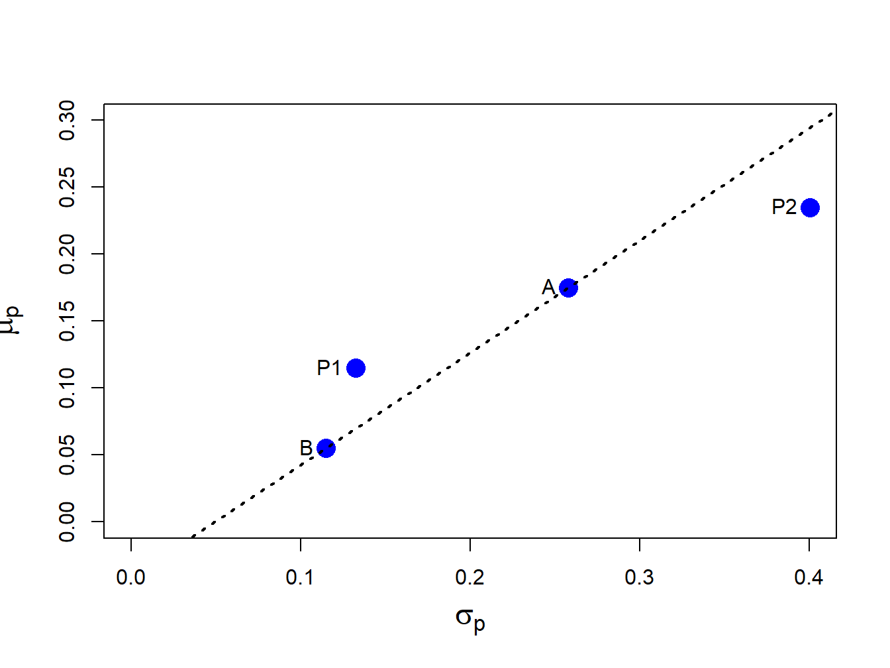
Consider an initial investment of \(\$W_{0}\) in the portfolio of assets A and B with return given by Equation 10.3, expected return given by Equation 10.4) and variance given by Equation 11.29. Then \(R_{p}\sim N(\mu_{p},\sigma_{p}^{2})\). For \(\alpha\in(0,1)\), the \(\alpha\times100\%\) portfolio value-at-risk is given by:
\[ \mathrm{VaR}_{p,\alpha}= -q_{\alpha}^{R_{p}}W_{0}, \tag{10.7}\]
where \(q_{\alpha}^{R_{p}}\) is the \(\alpha\)-quantile of the distribution of \(R_{p}\) and is given by
\[ q_{\alpha}^{R_{p}}=\mu_{p}+\sigma_{p}q_{\alpha}^{z}, \tag{10.8}\]
where \(q_{\alpha}^{z}\) is the \(\alpha\)-quantile of the standard normal distribution.9
What is the relationship between portfolio VaR and the individual asset VaRs? Is portfolio VaR a weighted average of the individual asset VaRs? In general, portfolio VaR is not a weighted average of the asset VaRs. To see this consider the portfolio weighted average of the individual asset return quantiles:
\[ \begin{aligned} x_{A}q_{\alpha}^{R_{A}}+x_{B}q_{\alpha}^{R_{B}} & =x_{A}(\mu_{A}+\sigma_{A}q_{\alpha}^{z})+x_{B}(\mu_{B}+\sigma_{B}q_{\alpha}^{z}) \\ & =x_{A}\mu_{A}+x_{B}\mu_{B}+(x_{A}\sigma_{A}+x_{B}\sigma_{B})q_{\alpha}^{z} \\ & =\mu_{p}+(x_{A}\sigma_{A}+x_{B}\sigma_{B})q_{\alpha}^{z}. \end{aligned} \tag{10.9}\]
The weighted asset quantile Equation 10.9 is not equal to the portfolio quantile Equation 10.8 unless \(\rho_{AB}=1\). Hence, weighted asset VaR is in general not equal to portfolio VaR because the quantile Equation 10.9 assumes a perfectly positive correlation between \(R_{A}\) and \(R_{B}\).
Example 10.3 (Portfolio VaR) Consider an initial investment of \(W_{0}=\$100,000\). Assuming that returns are simple, the 5% VaRs on assets A and B are:
\[\begin{align*} \mathrm{VaR}_{A,0.05} & = -q_{0.05}^{R_{A}}W_{0}= -\left(\mu_{A}+\sigma_{A}q_{.05}^{z}\right)W_{0}\\ & = -(0.175+0.258(-1.645))\cdot100,000= 24,937,\\ \mathrm{VaR}_{B,0.05} & = -q_{0.05}^{R_{B}}W_{0}= -\left(\mu_{B}+\sigma_{B}q_{.05}^{z}\right)W_{0}\\ & = -(0.055+0.115(-1.645))\cdot100,000= 13,416. \end{align*}\]
The 5% VaR on the equal weighted portfolio with \(x_{A}=x_{B}=0.5\) is:
\[\begin{align*} \mathrm{VaR}_{p,0.05} & = -q_{0.05}^{R_{p}}W_{0}= -\left(\mu_{p}+\sigma_{p}q_{.05}^{z}\right)W_{0}\\ & = -(0.115+0.1323(-1.645))\cdot100,000= 10,268, \end{align*}\]
and the weighted average of the individual asset VaRs is, \[ x_{A}\mathrm{VaR}_{A,0.05}+x_{B}\mathrm{VaR}_{B,0.05}=0.5(24,937)+0.5(13,416)=19,177. \] The 5% VaR on the long-short portfolio with \(x_{A}=1.5\) and \(x_{B}=-0.5\) is: \[ \mathrm{VaR}_{p,0.05}= -q_{0.05}^{R_{p}}W_{0}= -(0.235+0.4005(-1.645))\cdot100,000=42,371, \] and the weighted average of the individual asset VaRs is, \[ x_{A}\mathrm{VaR}_{A,0.05}+x_{B}\mathrm{VaR}_{B,0.05}=1.5(24,937)-0.5(13,416)=30,698. \] Notice that VaR\(_{p,0.05}\neq x_{A}\mathrm{VaR}_{A,0.05}+x_{B}\mathrm{VaR}_{B,0.05}\) because \(\rho_{AB}\neq1\).
Using R, these computations are:
w0 = 100000
VaR.A = -(mu.A + sig.A*qnorm(0.05))*w0
VaR.B = -(mu.B + sig.B*qnorm(0.05))*w0
VaR.p1 = -(mu.p1 + sig.p1*qnorm(0.05))*w0
VaR.p2 = -(mu.p2 + sig.p2*qnorm(0.05))*w0| \(VaR_{A,0.05}\) | \(VaR_{B,0.05}\) | \(VaR_{p_{1},0.05}\) | \(VaR_{p_{2},0.05}\) |
|---|---|---|---|
| 24937 | 13416 | 10268 | 42371 |
| \(0.5VaR_{A,0.05}+0.5VaR_{B,0.05}\) | \(1.5VaR_{A,0.05}-0.5VaR_{B,0.05}\) |
|---|---|
| 19177 | 30698 |
\(\blacksquare\)
Example 10.4 (Create R function to compute normal VaR) The previous example used repetitive R calculations to compute the 5% VaR for a variety of investments. An alternative approach is to create an R function to compute the VaR given \(\mu\), \(\sigma\), \(\alpha\) (VaR probability) and \(W_{0}\), and then apply the function using the inputs of the different assets. A simple function to compute VaR based on normally distributed asset returns is:
normalVaR = function(mu, sigma, w0, alpha = 0.05, invert=TRUE) {
## compute normal VaR for collection of assets given mean and sd vector
## inputs:
## mu n x 1 vector of expected returns
## sigma n x 1 vector of standard deviations
## w0 scalar initial investment in $
## alpha scalar tail probability
## invert logical. If TRUE report VaR as positive number
## output:
## VaR n x 1 vector of left tail return quantiles
if ( length(mu) != length(sigma) )
stop("mu and sigma must have same number of elements")
if ( alpha < 0 || alpha > 1)
stop("alpha must be between 0 and 1")
VaR = w0*(mu + sigma*qnorm(alpha))
if (invert) {
VaR = -VaR
}
return(VaR)
}You create an R function using function(). Every R function has a set of arguments or inputs. Here, the arguments are the \(n \times 1\) vectors mu and sigma, the scalars w0 and alpha, and the logical value invert. Default values for alpha and invert are specified in the definition of the function. The body of the function is defined within the braces {}, and the return value of the function is specified using return(). Here, you first check that the inputs mu and sigma are of the same length, and that the tail probability \(\alpha\) is between 0 and 1. Then, you compute normal VaR using Equation 10.7. If invert=TRUE you multiply the result by \(-1\). Finally, you return the vector of VaR values. After running the code that defines the function normalVaR(), it will be available in the R session for use like any other R function.
Using the normalVaR() function, the 5% VaR values of asset A, B and equally weighted portfolio are:
normalVaR(mu=c(mu.A, mu.B, mu.p1),
sigma=c(sig.A, sig.B, sig.p1),
w0=100000, alpha=0.05)
#> [1] 24937 13416 10268\(\blacksquare\)
The collection of all feasible portfolios, or the investment possibilities set, in the case of two assets is simply all possible portfolios that can be formed by varying the portfolio weights \(x_{A}\) and \(x_{B}\) such that the weights sum to one (\(x_{A}+x_{B}=1)\). I summarize the expected return-risk (mean-volatility) properties of the feasible portfolios in a plot with portfolio expected return, \(\mu_{p}\), on the vertical axis and portfolio standard deviation, \(\sigma_{p}\), on the horizontal axis. The portfolio standard deviation is used instead of variance because standard deviation is measured in the same units as the expected value (recall, variance is the average squared deviation from the mean).
Example 10.5 (Investment possibilities set for example data) The investment possibilities set for the data in Table 10.1 is illustrated in Figure 10.2. Here the portfolio weight on asset A, \(x_{A}\), is varied from -0.4 to 1.4 in increments of 0.1 and, since \(x_{B}=1-x_{A}\), the weight on asset B then varies from 1.4 to -0.4. This gives us 18 portfolios with weights \((x_{A},x_{B})=(-0.4,1.4),(-0.3,1.3),...,(1.3,-0.3),(1.4,-0.4)\). For each of these portfolios I use the formulas Equation 10.4 and Equation 10.6 to compute \(\mu_{p}\) and \(\sigma_{p}\). In R, the calculations are:
x.A = seq(from=-0.4, to=1.4, by=0.1)
x.B = 1 - x.A
mu.p = x.A*mu.A + x.B*mu.B
sig2.p = x.A^2 * sig2.A + x.B^2 * sig2.B + 2*x.A*x.B*sig.AB
sig.p = sqrt(sig2.p)
port.names = paste("portfolio", 1:length(x.A), sep=" ")
data.tbl = as.data.frame(cbind(x.A, x.B, mu.p, sig.p))
rownames(data.tbl) = port.names
col.names = c("$x_{A}$","$x_{B}$", "$\\mu_{p}$", "$\\sigma_{p}$" )
tbl.data = kbl(data.tbl, col.names=col.names) %>%
kable_styling(full_width=FALSE)
cat(tbl.data)| \(x_{A}\) | \(x_{B}\) | \(\mu_{p}\) | \(\sigma_{p}\) | |
|---|---|---|---|---|
| portfolio 1 | -0.4 | 1.4 | 0.007 | 0.205 |
| portfolio 2 | -0.3 | 1.3 | 0.019 | 0.179 |
| portfolio 3 | -0.2 | 1.2 | 0.031 | 0.155 |
| portfolio 4 | -0.1 | 1.1 | 0.043 | 0.133 |
| portfolio 5 | 0.0 | 1.0 | 0.055 | 0.115 |
| portfolio 6 | 0.1 | 0.9 | 0.067 | 0.102 |
| portfolio 7 | 0.2 | 0.8 | 0.079 | 0.098 |
| portfolio 8 | 0.3 | 0.7 | 0.091 | 0.102 |
| portfolio 9 | 0.4 | 0.6 | 0.103 | 0.114 |
| portfolio 10 | 0.5 | 0.5 | 0.115 | 0.132 |
| portfolio 11 | 0.6 | 0.4 | 0.127 | 0.154 |
| portfolio 12 | 0.7 | 0.3 | 0.139 | 0.178 |
| portfolio 13 | 0.8 | 0.2 | 0.151 | 0.204 |
| portfolio 14 | 0.9 | 0.1 | 0.163 | 0.231 |
| portfolio 15 | 1.0 | 0.0 | 0.175 | 0.258 |
| portfolio 16 | 1.1 | -0.1 | 0.187 | 0.286 |
| portfolio 17 | 1.2 | -0.2 | 0.199 | 0.314 |
| portfolio 18 | 1.3 | -0.3 | 0.211 | 0.343 |
| portfolio 19 | 1.4 | -0.4 | 0.223 | 0.372 |
Portfolios 1-4 and 16-19 are the long-short portfolios and portfolios 5-15 are the long-only portfolios. In R, the risk-return properties of this set of feasible portfolios can be visualized using:
cex.val = 1.5
plot(sig.p, mu.p, type="b", pch=16, cex=cex.val,
ylim=c(0, max(mu.p)), xlim=c(0, max(sig.p)),
xlab=expression(sigma[p]), ylab=expression(mu[p]),
cex.lab=1.5, col=c(rep("blue", 4), rep("black", 2),
"green", rep("black", 8), rep("blue", 4)))
text(x=sig.A, y=mu.A, labels="Asset A", pos=4)
text(x=sig.B, y=mu.B, labels="Asset B", pos=4)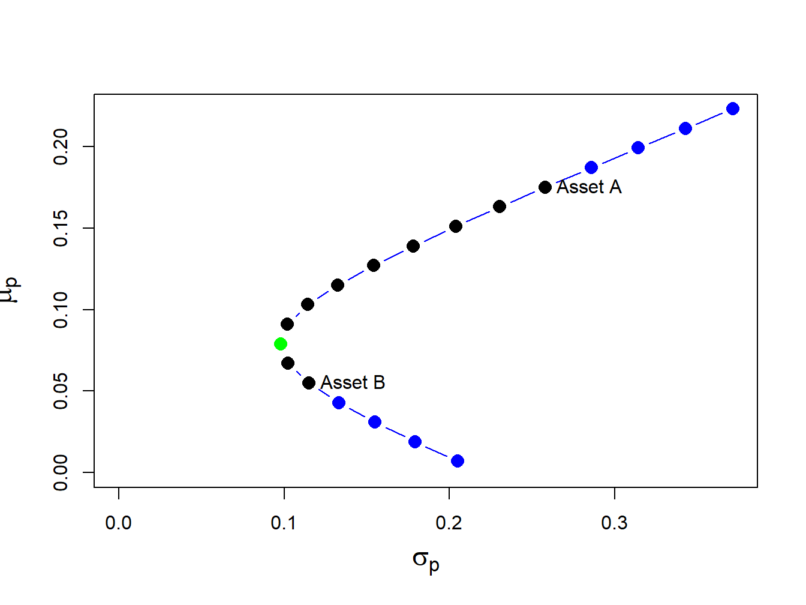
\(\blacksquare\)
Notice that the plot in (\(\mu_{p},\sigma_{p})\)-space looks like a parabola turned on its side (in fact, it is one side of a hyperbola). The plot is often referred to as the Markowitz bullet as it resembles the shape of a bullet speeding toward the y-axis. The black dots plus the green dot represent the long-only portfolios, and the blue dots represent long-short portfolios. The black dot labeled “Asset A” is the portfolio \((x_{A}=1, x_{B}=0)\), and the black dot labeled “Asset B” is the portfolio \((x_{A}=0, x_{B}=1)\).
The bullet shape of the feasible set shows that portfolio risk can be reduced through diversification. Risk reduction through diversification can be understood as follows. Suppose an investor is initially invested 100% in asset B (i.e., portfolio 5). Diversification involves rebalancing the portfolio to include asset A. For example, portfolio 6 is \((x_{A}=0.1, x_{B}=0.9)\). This portfolio has both a higher expected return and a lower standard deviation than portfolio 5. This is the benefit from diversification. Portfolio expected return increases and risk decreases until portfolio 7 is reached, which is at the tip of the Markowitz bullet (green dot). This portfolio has the property that it has the smallest variance/volatility among all feasible portfolios. Accordingly, this portfolio is called the global minimum variance portfolio. Continuing from portfolio 8 through portfolio 19, you see that both expected return and risk increase.
The global minimum variance portfolio plays a key role in mean-variance portfolio theory and it is important to know how to determine its weights. Here, I show that it is a simple exercise in calculus to find the global minimum variance portfolio weights. I solve the constrained optimization problem10:
\[\begin{align*} \underset{x_{A},x_{B}}{\min}\sigma_{p}^{2} & =x_{A}^{2}\sigma_{A}^{2}+x_{B}^{2}\sigma_{B}^{2}+2x_{A}x_{B}\sigma_{AB}\\ ~s.t.~x_{A}+x_{B} & =1. \end{align*}\]
This constrained optimization problem can be solved using two methods. The first method, called the method of substitution, uses the constraint to substitute out one of the variables to transform the constrained optimization problem in two variables into an unconstrained optimization problem in one variable. The second method, called the method of Lagrange multipliers, introduces an auxiliary variable called the Lagrange multiplier and transforms the constrained optimization problem in two variables into an unconstrained optimization problem in three variables.
The substitution method is straightforward. Substituting \(x_{B}=1-x_{A}\) into the formula for \(\sigma_{p}^{2}\) reduces the problem to: \[ \min_{x_{A}}\sigma_{p}^{2}=x_{A}^{2}\sigma_{A}^{2}+(1-x_{A})^{2}\sigma_{B}^{2}+2x_{A}(1-x_{A})\sigma_{AB}. \] The first order conditions for a minimum, via the chain rule, are: \[ 0=\frac{d\sigma_{p}^{2}}{dx_{A}}=2x_{A}^{\min}\sigma_{A}^{2}-2(1-x_{A}^{\min})\sigma_{B}^{2}+2\sigma_{AB}(1-2x_{A}^{\min}), \] and straightforward calculations yield,
\[ x_{A}^{\min}=\frac{\sigma_{B}^{2}-\sigma_{AB}}{\sigma_{A}^{2}+\sigma_{B}^{2}-2\sigma_{AB}},~x_{B}^{\min}=1-x_{A}^{\min}. \tag{10.10}\]
The method of Lagrange multipliers involves two steps. In the first step, the constraint \(x_{A}+x_{B}=1\) is put into homogenous form \(x_{A}+x_{B}-1=0\). In the second step, the Lagrangian function is formed by adding to \(\sigma_{p}^{2}\) the homogenous constraint multiplied by an auxiliary variable \(\lambda\) (the Lagrange multiplier) giving: \[ L(x_{A},x_{B},\lambda)=x_{A}^{2}\sigma_{A}^{2}+x_{B}^{2}\sigma_{B}^{2}+2x_{A}x_{B}\sigma_{AB}+\lambda(x_{A}+x_{B}-1). \] This function is then minimized with respect to \(x_{A},\) \(x_{B}\), and \(\lambda\). The first order conditions are:
\[\begin{align*} 0 & =\frac{\partial L(x_{A},x_{B},\lambda)}{\partial x_{A}}=2x_{A}\sigma_{A}^{2}+2x_{B}\sigma_{AB}+\lambda,\\ 0 & =\frac{\partial L(x_{A},x_{B},\lambda)}{\partial x_{B}}=2x_{B}\sigma_{B}^{2}+2x_{A}\sigma_{AB}+\lambda,\\ 0 & =\frac{\partial L(x_{A},x_{B},\lambda)}{\partial\lambda}=x_{A}+x_{B}-1. \end{align*}\]
The first two equations can be rearranged to give: \[ x_{B}=x_{A}\left(\frac{\sigma_{A}^{2}-\sigma_{AB}}{\sigma_{B}^{2}-\sigma_{AB}}\right). \] Substituting this value for \(x_{B}\) into the third equation and rearranging gives the solution Equation 10.10.
Example 10.6 (Global minimum variance portfolio for example data) Using the data in Table 10.1 and Equation 10.10 you have: \[ x_{A}^{\min}=\frac{0.01323-(-0.004866)}{0.06656+0.01323-2(-0.004866)}=0.2021,~x_{B}^{\min}=0.7979. \] Hence, the global minimum variance portfolio is essentially portfolio 7 in Figure 10.2 and indeed lies at the tip of the Markowitz bullet.
The expected return, variance and standard deviation of this portfolio are:
\[\begin{align*} \mu_{p} & =(0.2021)\cdot(0.175)+(0.7979)\cdot(0.055)=0.07925\\ \sigma_{p}^{2} & =(0.2021)^{2}\cdot(0.067)+(0.7979)^{2}\cdot(0.013)\\ & +2\cdot(0.2021)(0.7979)(-0.004875)\\ & =0.00975\\ \sigma_{p} & =\sqrt{0.00975}=0.09782. \end{align*}\]
In R, the calculations to compute the global minimum variance portfolio weights and its expected return and volatility are:
xA.min = (sig2.B - sig.AB)/(sig2.A + sig2.B - 2*sig.AB)
xB.min = 1 - xA.min
mu.p.min = xA.min*mu.A + xB.min*mu.B
sig2.p.min = xA.min^2 * sig2.A + xB.min^2 * sig2.B + 2*xA.min*xB.min*sig.AB
sig.p.min = sqrt(sig2.p.min)
data.tbl = as.data.frame(t(c(xA.min, xB.min, mu.p.min, sig.p.min)))
col.names = c("$x_{A}^{\\min}$","$x_{B}^{\\min}$", "$\\mu_{p}^{\\min}$",
"$\\sigma_{p}^{\\min}$" )
tbl.data = kbl(data.tbl, col.names=col.names) %>%
kable_styling(full_width=FALSE)
cat(tbl.data)| \(x_{A}^{\min}\) | \(x_{B}^{\min}\) | \(\mu_{p}^{\min}\) | \(\sigma_{p}^{\min}\) |
|---|---|---|---|
| 0.202 | 0.798 | 0.079 | 0.098 |
\(\blacksquare\)
The shape of the investment possibilities set is very sensitive to the correlation between assets A and B given the other parameters. I illustrate this sensitivity by computing portfolio frontiers for the example data for \(\rho_{AB} = -0.9, -0.5, 0, 0.5, 0.9\). Figure 10.3 shows these portfolio frontiers.
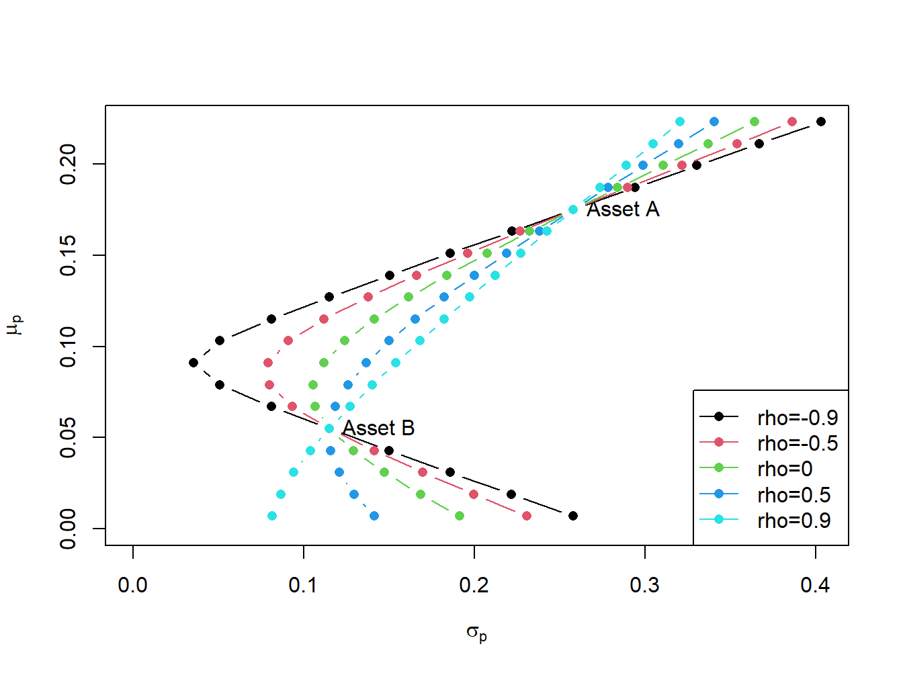
The curvature of the portfolio frontier is determined by the value of \(\rho_{AB}\). The closer \(\rho_{AB}\) is to -1 the more curved is the frontier toward the y-axis and the higher is the possible diversification benefit. What is perhaps surprising from Figure 10.3 is that there is noticeable curvature even for positive values of \(\rho_{AB}\).
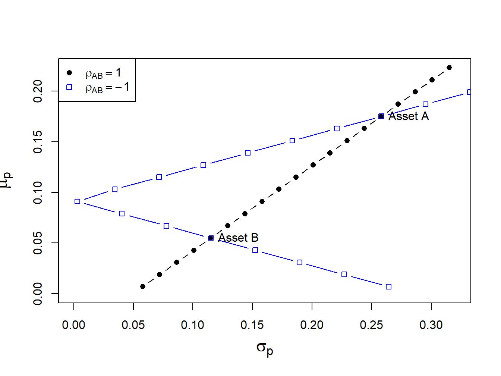
If \(\rho_{AB}\) is close to 1 then the portfolio frontier approaches a straight line connecting the portfolio with all wealth invested in asset B, \((x_{A},x_{B})=(0,1)\), to the portfolio with all wealth invested in asset A, \((x_{A},x_{B})=(1,0)\). If \(\rho_{AB}=-1\) then the set actually touches the \(\mu_{p}\) axis. What this means is that if assets A and B are perfectly negatively correlated then there exists a portfolio of A and B that has positive expected return and zero variance! These cases are illustrated in Figure 10.4.
To find the portfolio with \(\sigma_{p}^{2}=0\) when \(\rho_{AB}=-1\) I use Equation 10.10 and the fact that \(\sigma_{AB}=\rho_{AB}\sigma_{A}\sigma_{B}\) to give: \[ x_{A}^{\min}=\frac{\sigma_{B}}{\sigma_{A}+\sigma_{B}},~x_{B}^{\min}=1-x_{A}. \]
Given the assumptions on returns and investor risk preferences, I now characterize the set of efficient portfolios and inefficient portfolios.
Definition 10.1 (Efficient Portfolios) Efficient portfolios are the feasible portfolios that have the highest expected return for a given level of risk as measured by portfolio standard deviation. These are the portfolios that investors are most interested in holding. Graphically, these are the portfolios starting with the global minimum variance portfolio that are above and to the right of the global minimum variance portfolio.
Definition 10.2 (Inefficient Portfolios) Inefficient portfolios are the portfolios such that there is another feasible portfolio that has the same risk but a higher expected return. Graphically, these are the portfolios that are below and to the right of the global minimum variance portfolio.
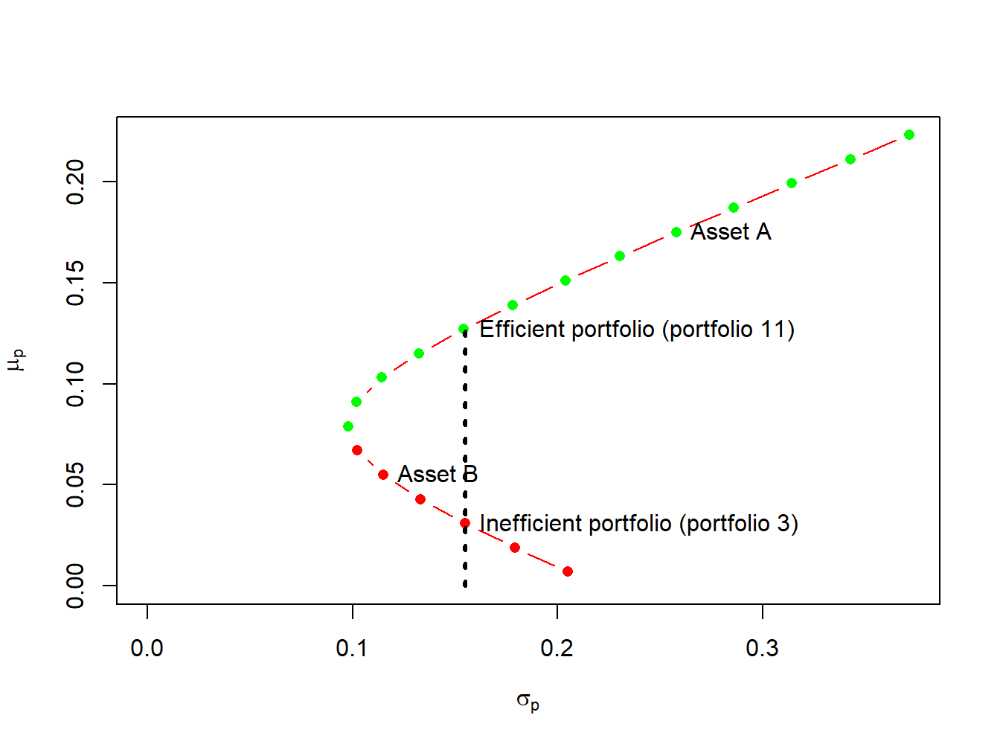
Example 10.7 (Efficient and inefficient portfolios for example data) Figure 10.5 shows the efficient and inefficient portfolios from the example data in Table 10.1. The efficient portfolios are those that have the highest expected return for a given standard deviation value. These portfolios are the green dots starting with the global minimum variance portfolio at the tip of the Markowitz bullet. The inefficient portfolios are the red dots below the global minimum variance portfolio. For example, Figure 10.5 shows two feasible portfolios, portfolio 3 and portfolio 11, with the same standard deviation value but different expected return values. Portfolio 11 has the highest expected return and so is the efficient portfolio. Portfolio 3, with the lower expected return, is the inefficient portfolio.
\(\blacksquare\)
Given the efficient set of portfolios as described in Figure 10.2, which portfolio will an investor choose? Of the efficient portfolios, investors will choose the one that accords with their risk preferences. Very risk averse investors will want a portfolio that has low volatility (risk) and will choose a portfolio very close to the global minimum variance portfolio. In contrast, very risk tolerant investors will ignore volatility and seek portfolios with high expected returns. Hence, these investors will choose portfolios with large amounts of asset A which may involve short-selling asset B.
In the preceding section I constructed the efficient set of portfolios involving two risky assets. Now I consider what happens when you introduce a risk-free asset. In the present context, a risk-free asset is equivalent to a default-free pure discount bond that matures at the end of the assumed investment horizon.11 The risk-free rate, \(r_{f}\), is then the nominal return on the bond. For example, if the investment horizon is one month then the risk-free asset is a 30-day U.S. Treasury bill (T-bill) and the risk-free rate is the nominal rate of return on the T-bill.12 If our holdings of the risk-free asset is positive then you are “lending money” to the government at the risk-free rate, and if our holdings are negative then you are “borrowing” from the government at the risk-free rate.
The assumption that investors can borrow and lend at the same risk-free rate is unrealistic in the real world due to differing credit worthiness of investors. Investors can certainly buy T-Bills and receive the risk-free rate. However, most investors can only borrow funds at rates much higher than the T-Bill rate.
In this sub-section, I consider portfolios of a single risky asset with random return \(R \sim N(\mu, \sigma^2)\) and a risk-free asset with non-random return \(r_{f}\). Since the risk-free rate is fixed over the investment horizon it is not a random variable. As a result, it has some special properties summarized in the following Proposition.
Proposition 10.2 (Properties of Risk-Free Rate) Let \(r_{f}\) denote the fixed non-random risk-free rate, and let \(R\) denote the random return on a risky asset with \(E[R]=\mu\) and \(\mathrm{var}(R)=\sigma^{2}\). Then \[\begin{align*} E[r_{f}] &= r_{f},\\ \mathrm{var}(r_{f}) & = E[(r_{f}-E[r_{f}])^2] = 0,\\ \mathrm{cov}(R,r_{f}) &= E[(r_{f}-E[r_{f}])(R - E[R])] =0. \end{align*}\]
Consider an investment in the risky asset and the risk-free asset (henceforth referred to as a T-bill). Let \(x\) denote the share of wealth in the risky asset, and \(x_{f}\) denote the share of wealth in T-bills such that \(x + x_{f}=1\). Using \(x_f = 1 - x\), the portfolio return can be written as: \[ R_{p}=x_{f}r_{f}+xR = (1-x)r_{f}+xR=r_{f}+x(R-r_{f}). \tag{10.11}\] The quantity \(R-r_{f}\) is called the excess return (over the return on T-bills) on the risky asset. The portfolio expected return is then:
\[ \mu_{p}=r_{f}+x(E[R]-r_{f})=r_{f}+x(\mu-r_{f}), \tag{10.12}\]
where the quantity \((\mu-r_{f})\) is called the expected excess return or risk premium on the risky asset. The risk premium is typically positive indicating that investors expect a higher return on the risky asset than the safe asset (otherwise, why would investors hold the risky asset?). You may express the risk premium on the portfolio in terms of the risk premium on the risky asset: \[ \mu_{p}-r_{f}=x(\mu-r_{f}). \] The more you invest in the risky asset the higher the risk premium on the portfolio of T-Bills and the risky asset.
Because the risk-free rate is constant, the portfolio variance only depends on the variability of the risky asset and is given by: \[ \sigma_{p}^{2}= \mathrm{var(R_{p})} = \mathrm{var(xR)}= x^{2}\sigma^{2}. \] The portfolio standard deviation is therefore proportional to the standard deviation on the risky asset:13
\[ \sigma_{p}=|x|\sigma. \tag{10.13}\]
Example 10.8 (Portfolios of T-Bills and asset B for example data) To illustrate the risk-return properties of portfolios of a T-Bill and a single risky asset, consider forming portfolios of T-Bills and asset B. Let \(x_{B}\) and \(1-x_{B}\) denote the shares of wealth in asset B and T-Bills, respectively. Assume the T-Bill rate is \(r_f = 0.03\). Then the risk premium on asset B is \(\mu_{B}-r_{r} = 0.055 - 0.03 = 0.025\), the expected return on portfolios of T-Bills and asset B is \(\mu_{p} = 0.03 + x_{B}\times 0.025\), and the portfolio standard deviation is \(\sigma_{p} = |x_{B}|\times 0.115\). Figure 10.6 plots \(\mu_{p}\) vs. \(\sigma_{p}\) for portfolios with \(x_{B} = -1.4, -1.3, \ldots 1.4\).
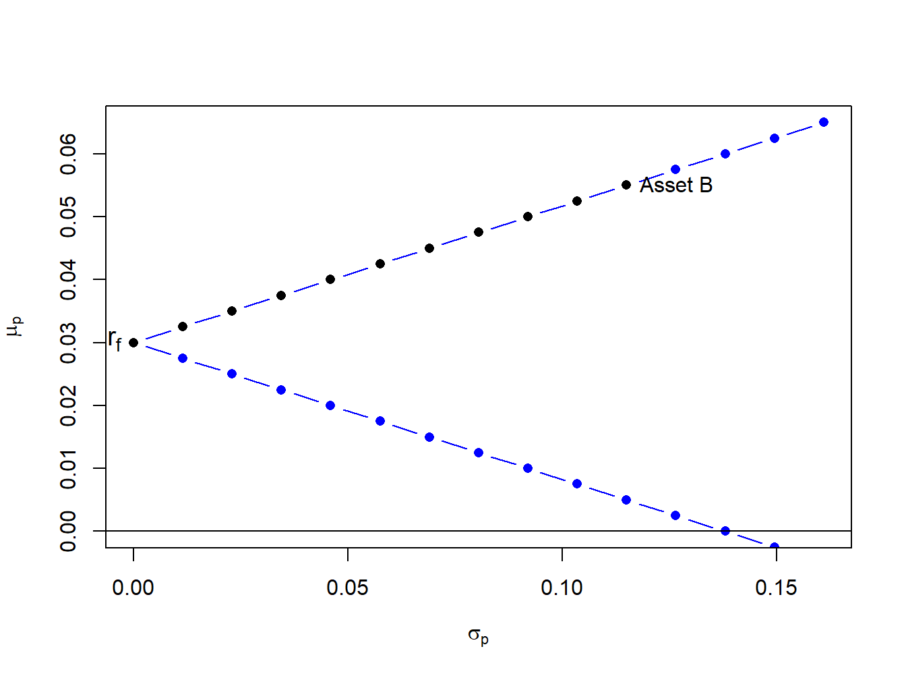
Notice that the set of feasible portfolios lie on two straight lines, one with a positive slope and one with a negative slope. The line with a positive slope represents portfolios with long positions in asset B, and the line with a negative slope represents portfolios with short positions in asset B. The blue dots represent portfolios with short positions and the black dots represent long-only portfolios. The blue dots above the point labeled “Asset B” represent long-short portfolios where the T-Bill is shorted to finance additional investment in asset B. \(\blacksquare\)
If you assume that \(x > 0\) (do not short the risky asset), you can use Equation 10.13 to solve for \(x\): \[ x=\frac{\sigma_{p}}{\sigma}. \tag{10.14}\] Substituting Equation 10.14 into Equation 10.12 gives the following equation:
\[ \mu_{p}=r_{f}+\frac{\mu-r_{f}}{\sigma}\cdot\sigma_{p}, \tag{10.15}\]
Equation Equation 10.15 describes a straight line in (\(\mu_{p},\sigma_{p}\))-space with intercept \(r_{f}\) and slope \((\mu-r_{f})/\sigma\). This line characterizes the linear risk-return tradeoff of portfolios of T-Bills and a risky asset when the risky asset is not shorted. This line has a positive slope provided the risk premium is positive.
This line described by Equation 10.15 is often called the capital allocation line (CAL) as it describes how investment capital is allocated between T-Bills and the risky asset. Points on the line close to the y-axis represent portfolios mostly allocated to T-Bills, and points far away from the y-axis represent portfolios mostly allocated to the risky asset. The slope of the CAL is called the Sharpe ratio (SR) (named after the economist William Sharpe), and it measures the risk premium on the asset per unit of risk (as measured by the standard deviation of the asset). From Equation 10.15 you get \[ \frac{d\mu_{p}}{d\sigma_{p}}=\frac{\mu-r_{f}}{\sigma}=SR. \]
Example 10.9 (Portfolios of T-Bills and risky assets for example data) Consider creating portfolios of asset A and T-bills and asset B and T-Bills with \(r_{f}=0.03\):
r.f = 0.03
x.A = seq(from=0, to=1.4, by=0.1)
mu.p.A = r.f + x.A*(mu.A - r.f)
sig.p.A = x.A*sig.A
x.B = seq(from=0, to=1.4, by=0.1)
mu.p.B = r.f + x.B*(mu.B - r.f)
sig.p.B = x.B*sig.BThe risk-return properties of these portfolios are illustrated in Figure 10.7.
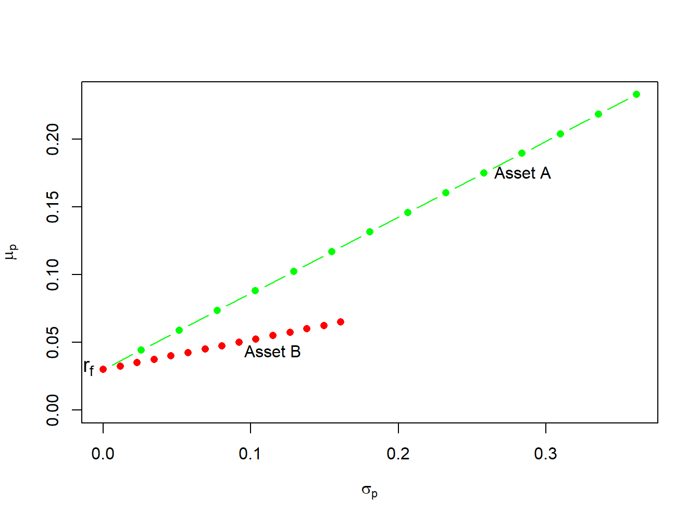
In Figure 10.7 the point labeled “\(r_{f}\)” represents a portfolio that is 100% invested in T-bills. The points labeled “Asset A” and “Asset B” represent portfolios that are 100% invested in assets A and B, respectively. A point half-way between “\(r_{f}\)” and “Asset A” is a portfolio that is 50% invested in T-bills and 50% invested in asset A. A point above and to the right of “Asset A” is a levered portfolio where more than 100% of asset A is financed by borrowing at the T-bill rate. Notice that as leverage increases (i.e, borrowing more at the T-Bill rate), portfolio volatility increases.
The portfolios which are combinations of asset A and T-bills have expected returns uniformly higher than the portfolios consisting of asset B and T-bills. This occurs because the Sharpe ratio for asset A is higher than the ratio for asset B:
\[\begin{align*} \mathrm{SR}_{A} & =\frac{\mu_{A}-r_{f}}{\sigma_{A}}=\frac{0.175-0.03}{0.258}=0.562,\\ \mathrm{SR}_{B} & =\frac{\mu_{B}-r_{f}}{\sigma_{B}}=\frac{0.055-0.03}{0.115}=0.217. \end{align*}\] Hence, portfolios of asset A and T-bills are efficient relative to portfolios of asset B and T-bills. \(\blacksquare\)
The previous example shows that the Sharpe ratio can be used to rank the risk return properties of individual assets. Assets with a high Sharpe ratio have a better risk-return tradeoff than assets with a low Sharpe ratio. Accordingly, investment analysts routinely rank assets based on their Sharpe ratios.
TBD
Now I expand on the previous results by allowing our investor to form portfolios of assets A, B and T-bills. The efficient set of portfolios in this case will still be a straight line in (\(\mu_{p},\sigma_{p})\)-space with intercept \(r_{f}\). The slope of the efficient set, the maximum Sharpe ratio, is such that it is tangent to the portfolio frontier constructed just using the two risky assets A and B. Figure 10.8 illustrates why this is so.
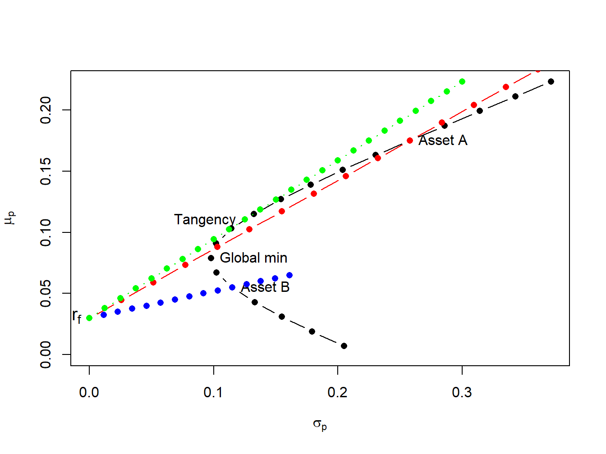
If you invest in only in asset B and T-bills then the Sharpe ratio is \(\mathrm{SR}_{B}=\frac{\mu_{B}-r_{f}}{\sigma_{B}}=0.217\), and the CAL intersects the set of risky asset portfolios at point B. This is clearly not the efficient set of portfolios. For example, you could do uniformly better if you instead invest only in asset A and T-bills. This gives us a Sharpe ratio of \(\mathrm{SR}_{A}=\frac{\mu_{A}-r_{f}}{\sigma_{A}}=0.562\), and the new CAL intersects the set of risky asset portfolios at point A. However, you could do better still if you invest in T-bills and some combination of assets A and B. Geometrically, it is easy to see that the best you can do is obtained for the combination of assets A and B such that the CAL is just tangent to the set of risky asset portfolios. This point is labeled “Tangency” on the graph and represents the tangency portfolio of assets A and B. Portfolios of T-Bills and the tangency portfolio are the set of efficient portfolios consisting of T-Bills, asset A and asset B.
You can determine the proportions of each asset in the tangency portfolio by finding the values of \(x_{A}\) and \(x_{B}\) that maximize the Sharpe ratio of a portfolio that is on the envelope of the Markowitz bullet. Formally, you solve the constrained maximization problem:
\[\begin{align*} & \underset{x_{A},x_{B}}{\max}~\mathrm{SR}_{p}=\frac{\mu_{p}-r_{f}}{\sigma_{p}}~s.t.\\ \mu_{p} & =x_{A}\mu_{A}+x_{B}\mu_{B},\\ \sigma_{p}^{2} & =x_{A}^{2}\sigma_{A}^{2}+x_{B}^{2}\sigma_{B}^{2}+2x_{A}x_{B}\sigma_{AB},\\ 1 & =x_{A}+x_{B}. \end{align*}\]
Using the method of substitution with \(x_{B} = 1 - x_{A}\) and rearranging, the above problem can be reduced to solving the unconstrained maximization: \[ \underset{x_{A}}{\max}~\frac{x_{A}(\mu_{A}-r_{f})+(1-x_{A})(\mu_{B}-r_{f})}{\left(x_{A}^{2}\sigma_{A}^{2}+(1-x_{A})^{2}\sigma_{B}^{2}+2x_{A}(1-x_{A})\sigma_{AB}\right)^{1/2}}. \] This is a straightforward, albeit very tedious, calculus problem and the solution can be shown to be (see Exercises): \[ \begin{aligned} x_{A}^{tan} & =\frac{(\mu_{A}-r_{f})\sigma_{B}^{2}-(\mu_{B}-r_{f})\sigma_{AB}}{(\mu_{A}-r_{f})\sigma_{B}^{2}+(\mu_{B}-r_{f})\sigma_{A}^{2}-(\mu_{A}-r_{f}+\mu_{B}-r_{f})\sigma_{AB}},\\ x_{B}^{tan} & =1-x_{T}^{A}. \end{aligned} \tag{10.16}\]
Example 10.10 (Tangency portfolio for example data) For the example data in Table 10.1 using Equation 10.16 with \(r_{f}=0.03,\) you get \(x_{A}^{tan}=0.4625\) and \(x_{B}^{tan}=0.5375.\) The expected return, variance, standard deviation, and Sharpe ratio of the tangency portfolio are:
\[\begin{align*} \mu_{tan}&=x_{A}^{tan}\mu_{A}+x_{B}^{tan}\mu_{B}\\ &=(0.4625)(0.175)+(0.5375)(0.055)=0.1105,\\ \sigma_{tan}^{2}&=\left(x_{A}^{tan}\right)^{2}\sigma_{A}^{2}+\left(x_{B}^{tan}\right)^{2}\sigma_{B}^{2}+2x_{A}^{tan} x_{B}^{tan}\sigma_{AB}\\ &=(0.4625)^{2}(0.06656)+(0.5375)^{2}(0.01323)+ 2(0.4625)(0.5375)(-0.004866)=0.01564,\\ \sigma_{tan}&=\sqrt{0.01564}=0.1251,\\ SR_{tan}&=\frac{\mu_{tan}-r_{f}}{\sigma_{tan}}=\frac{0.1105-0.03}{0.1251}=0.6434 \end{align*}\]
In R, the computations to compute the tangency portfolio are:
# compute portfolio weights
top = (mu.A - r.f)*sig2.B - (mu.B - r.f)*sig.AB
bot = (mu.A - r.f)*sig2.B + (mu.B - r.f)*sig2.A - (mu.A - r.f + mu.B - r.f)*sig.AB
x.A.tan = top/bot
x.B.tan = 1 - x.A.tan
mu.p.tan = x.A.tan*mu.A + x.B.tan*mu.B
sig2.p.tan = x.A.tan^2 * sig2.A + x.B.tan^2 * sig2.B + 2*x.A.tan*x.B.tan*sig.AB
sig.p.tan = sqrt(sig2.p.tan)
SR.tan = (mu.p.tan - r.f)/sig.p.tan
data.tbl = as.data.frame(t(c(x.A.tan,x.B.tan,c(mu.p.tan,sig.p.tan,SR.tan))))
col.names = c("$x_{A}^{tan}$","$x_{B}^{tan}$", "$\\mu_{tan}$",
"$\\sigma_{tan}$","$\\mathrm{SR}_{tan}$" )
tbl.data = kbl(data.tbl, col.names=col.names) %>%
kable_styling(full_width=FALSE)
cat(tbl.data)| \(x_{A}^{tan}\) | \(x_{B}^{tan}\) | \(\mu_{tan}\) | \(\sigma_{tan}\) | \(\mathrm{SR}_{tan}\) |
|---|---|---|---|---|
| 0.463 | 0.537 | 0.111 | 0.125 | 0.644 |
\(\blacksquare\)
The efficient portfolios are combinations of the tangency portfolio (risky asset) and the T-bill. Accordingly, using Equation 10.12 and Equation 10.13 the expected return and standard deviation of any efficient portfolio are given by: \[ \mu_{p}^{e} =r_{f}+x_{T}(\mu_{tan}-r_{f}), \tag{10.17}\] \[ \sigma_{p}^{e} =x_{T}\sigma_{tan}, \tag{10.18}\] where \(x_{T}\) represents the fraction of wealth invested in the tangency portfolio, \(1-x_{T}\) represents the fraction of wealth invested in T-Bills, and \(\mu_{tan}\) and \(\sigma_{tan}\) are the expected return and standard deviation of the tangency portfolio, respectively. This important result is known as the mutual fund separation theorem. The tangency portfolio can be considered as a mutual fund (i.e. portfolio) of the two risky assets, where the shares of the two assets in the mutual fund are determined by the tangency portfolio weights (\(x_{A}^{tan}\) and \(x_{B}^{tan}\) determined from Equation 10.16, and the T-bill can be considered as a mutual fund of risk-free assets. The expected return-risk trade-off of these portfolios is given by the line connecting the risk-free rate to the tangency point on the efficient frontier of risky asset only portfolios.
The optimal combination of the tangency portfolio and the T-bill an investor will choose depends on the investor’s risk preferences. If the investor is very risk averse, then she will choose a portfolio with low volatility which will be a portfolio with very little weight in the tangency portfolio and a lot of weight in the T-bill. This will produce a portfolio with an expected return close to the risk-free rate and a variance that is close to zero. If the investor can tolerate a large amount of risk, then she would prefer a portfolio with highest expected return regardless of the volatility. This portfolio may involve borrowing at the risk-free rate (leveraging) and investing the proceeds in the tangency portfolio to achieve a high expected return.
Example 10.11 (Efficient portfolios chosen by risk averse and risk tolerant investors) A highly risk averse investor may choose to put \(10\%\) of her wealth in the tangency portfolio and \(90\%\) in the T-bill. Then she will hold (\(10\%)\times(46.25\%)=4.625\%\) of her wealth in asset A, \((10\%)\times(53.75\%)=5.375\%\) of her wealth in asset B, and \(90\%\) of her wealth in the T-bill. The expected return on this portfolio is: \[ \mu_{p}^{e}=r_{f}+0.10(\mu_{tan}-r_{f})=0.03+0.10(0.1105-0.03)=0.03805, \] and the standard deviation is, \[ \sigma_{p}^{e}=0.10\sigma_{tan}=0.10(0.1251)=0.01251. \] In Figure 10.9, this efficient portfolio is labeled “Safe” . A very risk tolerant investor may actually borrow at the risk-free rate and use these funds to leverage her investment in the tangency portfolio. For example, suppose the risk tolerant investor borrows 100% of her wealth at the risk-free rate and uses the proceed to purchase 200% of her wealth in the tangency portfolio. Then she would hold \((200\%)\times(46.25\%)=92.50\%\) of her wealth in asset A, \((200\%)\times(53.75\%)=107.5\%\) in asset B, and she would owe \(100\%\) of her wealth to her lender. The expected return and standard deviation on this portfolio is: \[\begin{align*} \mu_{p}^{e} & =0.03+2(0.1105-0.03)=0.1910,\\ \sigma_{p}^{e} & =2(0.1251)=0.2501. \end{align*}\] In Figure 10.9, this efficient portfolio is labeled “Risky” . \(\blacksquare\)
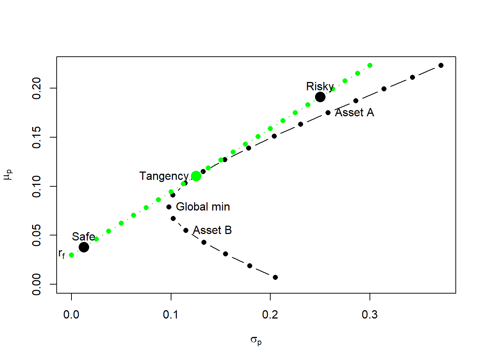
As you have seen, efficient portfolios are those portfolios that have the highest expected return for a given level of risk as measured by portfolio standard deviation. For portfolios with expected returns above the T-bill rate, efficient portfolios can also be characterized as those portfolios that have minimum risk (as measured by portfolio standard deviation) for a given target expected return.
Example 10.12 (Finding efficient portfolios with target expected return and target risk) To illustrate, consider Figure 10.10 which shows the portfolio frontier for two risky assets and the efficient frontier for two risky assets plus T-Bills. Suppose an investor initially holds all of his wealth in asset B. The expected return on this portfolio is \(\mu_{B}=0.055\), and the standard deviation (risk) is \(\sigma_{B}=0.115\). An efficient portfolio (combinations of the tangency portfolio and T-bills) that has the same standard deviation (risk) as asset B is given by the portfolio on the efficient frontier that is directly above \(\sigma_{B}=0.115\). To find the shares in the tangency portfolio and T-bills in this portfolio recall from Equation 10.18 that the standard deviation of an efficient portfolio with \(x_{T}\) invested in the tangency portfolio and \(1-x_{T}\) invested in T-bills is \(\sigma_{p}^{e}=x_{T}\sigma_{tan}\). Since you want to find the efficient portfolio with \(\sigma_{p}^{e}=\sigma_{B}=0.115\), you solve: \[ x_{T}=\frac{\sigma_{B}}{\sigma_{tan}}=\frac{0.115}{0.1251}=0.9195,~x_{f}=1-x_{T}=0.08049. \] That is, if you invest \(91.95\%\) of our wealth in the tangency portfolio and \(8.049\%\) in T-bills you will have a portfolio with the same standard deviation as asset B. Since this is an efficient portfolio, the expected return should be higher than the expected return on asset B. Indeed it is since: \[ \mu_{p}^{e}=r_{f}+x_{T}(\mu_{tan}-r_{f})=0.03+0.9195(0.1105-0.03)=0.1040. \] Notice that by diversifying our holding into assets A, B and T-bills you can obtain a portfolio with the same risk as asset B but with almost twice the expected return! By moving from asset B into an efficient portfolio you raise the Sharpe ratio of the investment from \(SR_{B}=0.217\) to \(SR_{tan}=0.6434\).
Next, consider finding an efficient portfolio that has the same expected return as asset B. Visually, this involves finding the combination of the tangency portfolio and T-bills that corresponds with the intersection of a horizontal line with intercept \(\mu_{B}=0.055\) and the line representing efficient combinations of T-bills and the tangency portfolio. To find the shares in the tangency portfolio and T-bills in this portfolio recall from Equation 10.17 that the expected return of an efficient portfolio with \(x_{T}\) invested in the tangency portfolio and \(1-x_{T}\) invested in T-bills has expected return equal to \(\mu_{p}^{e}=r_{f}+x_{T}(\mu_{tan}-r_{f})\). Since you want to find the efficient portfolio with \(\mu_{p}^{e}=\mu_{B}=0.055\) you solve: \[ x_{T}=\frac{\mu_{p}^{e}-r_{f}}{\mu_{tan}-r_{f}}=\frac{0.055-0.03}{0.1105-0.03}=0.3105,~x_{f}=1-x_{T}=0.6895. \] That is, if you invest \(31.05\%\) of wealth in the tangency portfolio and \(68.95\%\) of our wealth in T-bills you have a portfolio with the same expected return as asset B. Since this is an efficient portfolio, the standard deviation (risk) of this portfolio should be lower than the standard deviation on asset B. Indeed it is since: \[ \sigma_{p}^{e}=x_{T}\sigma_{tan}=0.3105(0.124)=0.03884. \] Notice how large the risk reduction is by forming an efficient portfolio. The standard deviation on the efficient portfolio is almost three times smaller than the standard deviation of asset B! Again, by moving from asset B into an efficient portfolio you raise the Sharpe ratio of the investment from \(SR_{B}=0.217\) to \(SR_{tan}=0.6434\) \(\blacksquare\)
The above example illustrates two ways to interpret the benefits from forming efficient portfolios. Starting from some benchmark portfolio, you can fix standard deviation (risk) at the value for the benchmark and then determine the gain in expected return from forming a diversified portfolio14. The gain in expected return has concrete meaning. Alternatively, you can fix expected return at the value for the benchmark and then determine the reduction in standard deviation (risk) from forming a diversified portfolio. The meaning to an investor of the reduction in standard deviation is not as clear as the meaning to an investor of the increase in expected return. It would be helpful if the risk reduction benefit can be translated into a number that is more interpretable than the standard deviation. The concept of Value-at-Risk (VaR) provides such a translation.
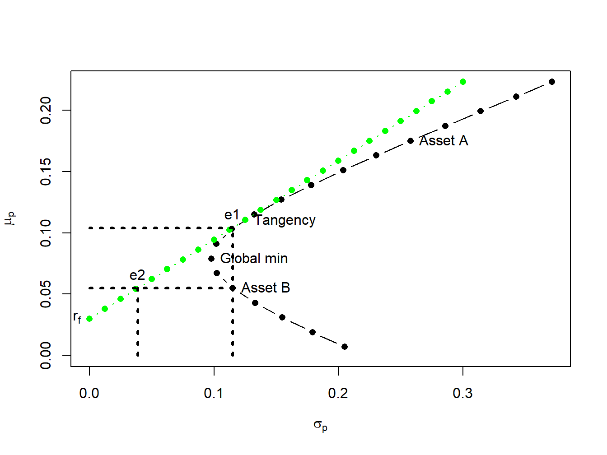
Recall, the VaR of an investment is the (lower bound of) loss in investment value over a given horizon with a stated probability. For example, consider an investor who invests \(W_{0}=\) \(\$100,000\) in asset B over the next year. Assuming that \(R_{B}\sim N(0.055,(0.115)^{2})\) represents the annual simple return on asset B, the 5% VaR is: \[ \mathrm{VaR}_{B,0.05}=-q_{0.05}^{R_{B}}W_{0}=(0.055+0.115(-1.645))\cdot\$100,000=\$13,416. \] If an investor holds $100,000 in asset B over the next year, then there is a 5% probability that he will lose $13,416 or more.
Now suppose the investor chooses to hold an efficient portfolio with the same expected return as asset B. This portfolio consists of \(31.05\%\) in the tangency portfolio and \(68.95\%\) in T-bills and has a standard deviation equal to \(0.03884\). Then \(R_{p}\sim N(0.055,0.03884)\) and the 5% VaR on the portfolio is: \[ \mathrm{VaR}_{p,0.05}=-q_{0.05}^{R_{p}}W_{0}=(0.055+0.03884(-1.645))\cdot\$100,000=\$884. \] Notice that the 5% VaR for the efficient portfolio is almost fifteen times smaller than the 5% VaR for the investment in asset B. Since VaR translates risk into a dollar figure, it is more interpretable than standard deviation as a measure of investment risk.
The portfolio theory for two risky assets and a risk-free asset developed in this chapter is not as limited as you might think if you realize that a single risky asset can also be a portfolio of many assets, such as a mutual fund of stocks or bonds, or an exchange traded fund (ETF) of stocks or bonds. In particular, a very common asset allocation for retirement portfolios is a simple two asset portfolio of in which one risky asset is a mutual fund of stocks and the other (less) risky asset is a mutual fund of U.S. Treasury bonds.
In the introcompfinr package there is a data object called VanguardPrices that contains monthly adjusted closing prices on six Vanguard mutual funds over the period January, 1995 through December, 2014.15 The fund VFINX is a low cost fund designed to track the performance of the S&P 500 index. The S&P 500 index is a value-weighted index of the 500 largest stocks (by market capitalization) traded on the NYSE.16 I will use this as my stock portfolio. The fund VBLTX is a low cost fund constructed to track the performance of a portfolio of long term (maturities greater than 10 years) U.S. Government Bonds.17 I will use this as my bond portfolio. I will use the U.S. 3-month T-Bill rate as the risk-free asset. The following code creates the monthly simple return data for this example:
VanguardPrices = as.xts(VanguardPrices)
stockBondPrices = VanguardPrices[, c("vfinx", "vbltx")]
stockBondRetS = na.omit(Return.calculate(stockBondPrices, method="simple"))
head(stockBondRetS, n=3)
#> vfinx vbltx
#> Feb 1995 0.0389 0.0280
#> Mar 1995 0.0295 0.0102
#> Apr 1995 0.0293 0.0202I will construct efficient portfolios using the GWN model estimates of expected returns, variances, and covariances over four sub-periods: January, 1995 to January 2000; January, 2000 to January, 2005; January, 2005 to January, 2010; January, 2010 to December, 2014. The approximate annualized T-Bill rates at the end of these periods are 0.05, 0.025, 0.001, and 0.001, respectively.18
# Define sub-periods
smpl1 = "1995-1::2000-1"
smpl2 = "2000-1::2005-1"
smpl3 = "2005-1::2010-1"
smpl4 = "2010-1::2014-12"
# Monthly risk-free rates for sub-periods
r.f = c(0.05, 0.025, 0.001, 0.001)/12Historical performance of the stock and bond portfolios over the four sub-periods is illustrated in Figure 10.11, created using:19
par(mfrow=c(2,2))
chart.CumReturns(stockBondRetS[smpl1], main="", wealth.index = TRUE,
legend.loc = "topleft")
chart.CumReturns(stockBondRetS[smpl2], main="", wealth.index = TRUE)
chart.CumReturns(stockBondRetS[smpl3], main="", wealth.index = TRUE)
chart.CumReturns(stockBondRetS[smpl4], main="", wealth.index = TRUE) 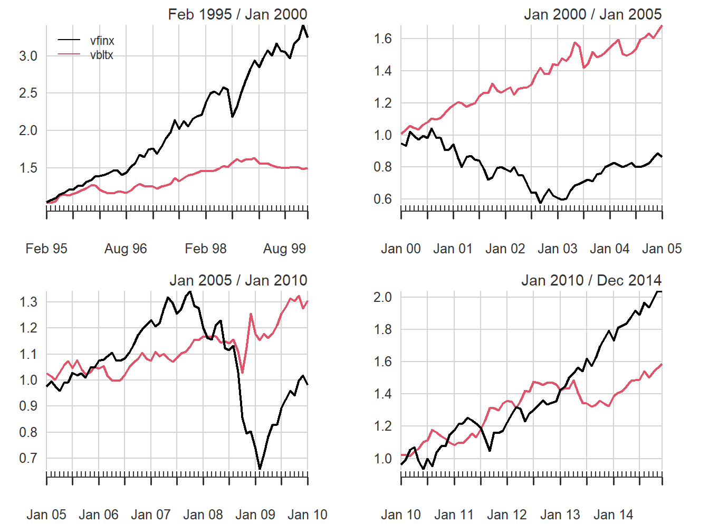
The performance of stocks and bonds varies substantially over the four sub-periods. In the first and fourth sub-periods, which cover the dot-com boom and the recovery from the 2009 financial crisis, stocks substantially outperformed bonds. However, in the second and third sub-periods, which cover the dot-com bust and the 2009 financial crisis, bonds outperformed stocks.
The GWN model estimates of the monthly expected returns, volatilities, and Sharpe ratios on the stock and bond portfolios are computed and annualized using the square-root-of-time rule with the PerformanceAnalytics function table.AnnualizedReturns().
# smpl1 = "1995-1::2000-1"
table.AnnualizedReturns(stockBondRetS[smpl1], Rf = r.f[1], geometric = FALSE)
#> vfinx vbltx
#> Annualized Return 0.248 0.0846
#> Annualized Std Dev 0.143 0.0756
#> Annualized Sharpe (Rf=5%) 1.381 0.4581
# smpl2 = "2000-1::2005-1"
table.AnnualizedReturns(stockBondRetS[smpl2], Rf = r.f[2], geometric = FALSE)
#> vfinx vbltx
#> Annualized Return -0.0155 0.1069
#> Annualized Std Dev 0.1628 0.0871
#> Annualized Sharpe (Rf=2.5%) -0.2490 0.9399
# smpl3 = "2005-1::2010-1"
table.AnnualizedReturns(stockBondRetS[smpl3], Rf = r.f[3], geometric = FALSE)
#> vfinx vbltx
#> Annualized Return 0.0092 0.0576
#> Annualized Std Dev 0.1600 0.1021
#> Annualized Sharpe (Rf=0.1%) 0.0514 0.5547
# smpl4 = "2010-1::2014-12"
table.AnnualizedReturns(stockBondRetS[smpl4], Rf = r.f[4], geometric = FALSE)
#> vfinx vbltx
#> Annualized Return 0.151 0.0965
#> Annualized Std Dev 0.130 0.0864
#> Annualized Sharpe (Rf=0.1%) 1.157 1.1050The annualized estimates confirm the relative performance of bonds and stocks in the four sub-periods. In general, stock returns are about twice as volatile as bond returns. Bonds performed well in all sub-periods, with annualized mean returns between 6% and 11%. In contrast, stocks only performed well in sub-periods 1 and 4 and had negative annualized mean returns in periods 2 and 3. In terms of Sharpe ratios, stocks had annualized Sharpe ratios a bit over 1 in sub-periods 1 and 4 and bonds had annualized Sharpe ratios of 0.9 and 0.55 in sub-periods 2 and 3.20
The sample correlations between the monthly stock and bond returns, by sub-period, are:
# smpl1 = "1995-1::2000-1"
cor(stockBondRetS[smpl1])[1,2]
#> [1] 0.2
# smpl2 = "2000-1::2005-1"
cor(stockBondRetS[smpl2])[1,2]
#> [1] -0.185
# smpl3 = "2005-1::2010-1"
cor(stockBondRetS[smpl3])[1,2]
#> [1] 0.24
# smpl4 = "2010-1::2014-12"
cor(stockBondRetS[smpl4])[1,2]
#> [1] -0.435Interestingly, the estimated correlation between stocks and bonds also varies by sub-period. In sub-periods one and three, the estimated correlations are positive, and, in sub-periods two and four, the estimated correlations are negative. The observed low to negative correlation between stock and bond returns suggests good risk reduction possibilities through diversification.
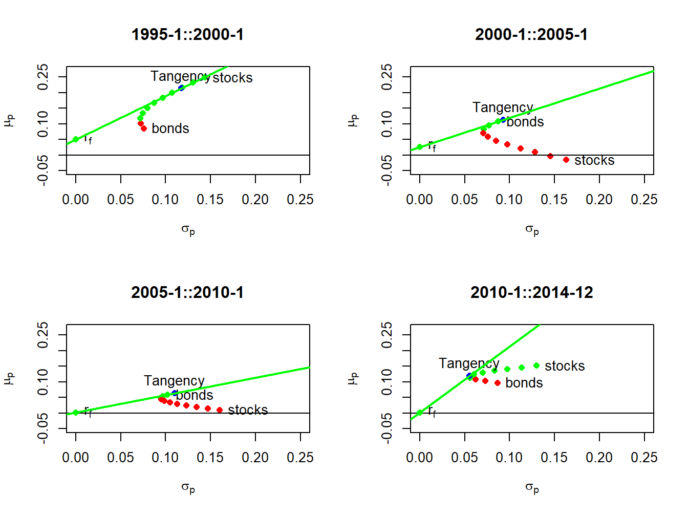
Using the sub-period GWN model estimates, I compute risky asset only efficient portfolios and efficient portfolios of T-Bills (risk-free asset) and the tangency portfolios. The resulting portfolios are illustrated in Figure 10.12. In sub-periods one and four, stocks are on the risky asset only efficient frontier and, in sub-periods two and three, bonds are on the risky asset only efficient frontier. The sub-period global minimum variance and tangency portfolios are listed in Tables Table 10.2 and Table 10.3. The global minimum variance portfolios are similar across sub-periods, with higher weights in bonds than stocks. The tangency portfolios, however, are quite different across sub-periods. In sub-periods one and four, stocks have weights 79% and 40%, respectively. In sub-periods two and three bonds essentially have 100% weights, respectively, and stocks are slighly shorted.
| \(x_{stock}\) | \(x_{bond}\) | \(\mu_{min}\) | \(\sigma_{min}\) | \(SR_{min}\) | |
|---|---|---|---|---|---|
| 1995-1::2000-1 | 0.162 | 0.838 | 0.111 | 0.072 | 0.851 |
| 2000-1::2005-1 | 0.260 | 0.740 | 0.075 | 0.070 | 0.713 |
| 2005-1::2010-1 | 0.231 | 0.769 | 0.046 | 0.094 | 0.481 |
| 2010-1::2014-12 | 0.362 | 0.638 | 0.116 | 0.055 | 2.108 |
| \(x_{stock}\) | \(x_{bond}\) | \(\mu_{tan}\) | \(\sigma_{tan}\) | \(SR_{tan}\) | |
|---|---|---|---|---|---|
| 1995-1::2000-1 | 0.789 | 0.211 | 0.213 | 0.117 | 1.393 |
| 2000-1::2005-1 | -0.047 | 1.047 | 0.113 | 0.093 | 0.943 |
| 2005-1::2010-1 | -0.107 | 1.107 | 0.063 | 0.110 | 0.561 |
| 2010-1::2014-12 | 0.404 | 0.596 | 0.119 | 0.055 | 2.128 |
This example shows the clear gains that can be made by forming efficient portfolios relative to holding stock or bonds by themselves. The results, however, are a bit misleading because the efficient portfolios formed in each sub-period use all of the data over the sub-period to estimate expected returns, volatilities, and covariances. This means that the computed efficient portfolios cannot be computed at the beginning of each sub-period. A more practical exercise would use the previous sub-period to compute GWN model estimates to be used in the subsequent sub-period. This method is explored in the end-of-chapter exercises.
Markowitz’s mean-variance portfolio theory is described in detail in (Markowitz 1959), (Markowitz 1987). Most MBA level corporate finance and investments textbooks have chapters on mean-variance portfolio theory. Good intermediate level treatments of portfolio theory from a quantitative perspective are given in (Benninga 2000), (Bodie, Kane, and Marcus 2013) and (Elton et al. 2014).
Consider the function of a single variable: \[ y=f(x)=x^{2}. \] Clearly the minimum of this function occurs at the point \(x=0\). Using calculus, you find the minimum by solving: \[ \min_{x}~y=x^{2}. \] The first order (necessary) condition for a minimum is: \[ 0=\frac{d}{dx}f(x)=\frac{d}{dx}x^{2}=2x \] and solving for \(x\) gives \(x=0\). The second order condition for a minimum is, \[ 0<\frac{d^{2}}{dx}f(x), \] and this condition is clearly satisfied for \(f(x)=x^{2}\).
Next, consider the function of two variables: \[ y=f(x,z)=x^{2}+z^{2} \tag{10.19}\] This function looks like a salad bowl whose bottom is at \(x=0\) and \(z=0\). To find the minimum of Equation 10.19, you solve: \[ \min_{x,z}y=x^{2}+z^{2}, \] and the first order necessary conditions are, \[\begin{align*} 0 & =\frac{\partial y}{\partial x}=2x,\\ 0 & =\frac{\partial y}{\partial z}=2z. \end{align*}\] Solving these two linear equations gives \(x=0\) and \(z=0\).
Now suppose you want to minimize Equation 10.19 subject to the linear constraint: \[ x+z=1. \tag{10.20}\] The minimization problem is now a * constrained minimization*: \[\begin{align*} \min_{x,z}y & =x^{2}+z^{2}\textrm{ subject to }(s.t.)\\ x+z & =1. \end{align*}\] Given the constraint \(x+z=1\), the function Equation 10.19 is no longer minimized at the point \((x,z)=(0,0)\) because this point does not satisfy \(x+z=1\). One simple way to solve this problem is to substitute the restriction Equation 10.20 into the function Equation 10.19 and reduce the problem to a minimization over one variable. To illustrate, use the restriction Equation 10.20 to solve for \(z\) as: \[ z=1-x. \tag{10.21}\] Now substitute Equation 10.21 into Equation 10.19 giving: \[ y=f(x,z)=f(x,1-x)=x^{2}+(1-x)^{2}. \tag{10.22}\] The function Equation 10.22 satisfies the restriction Equation 10.20 by construction. The constrained minimization problem now becomes: \[ \min_{x}y=x^{2}+(1-x)^{2}. \] The first order conditions for a minimum are: \[ 0=\frac{d}{dx}(x^{2}+(1-x)^{2})=2x-2(1-x)=4x-2, \] and solving for \(x\) gives \(x=1/2\). To solve for \(z\), use Equation 10.21 to give \(z=1-(1/2)=1/2\). Hence, the solution to the constrained minimization problem is \((x,z)=(1/2,1/2)\).
Another way to solve the constrained minimization is to use the method of Lagrange multipliers. This method augments the function to be minimized with a linear function of the constraint in homogeneous form. The constraint Equation 10.20 in homogenous form is: \[ x+z-1=0. \] The augmented function to be minimized is called the Lagrangian and is given by: \[ L(x,z,\lambda)=x^{2}+z^{2}-\lambda(x+z-1). \] The coefficient on the constraint in homogeneous form, \(\lambda\), is called the Lagrange multiplier. It measures the cost, or shadow price, of imposing the constraint relative to the unconstrained problem. The constrained minimization problem to be solved is now: \[ \min_{x,z,\lambda}~L(x,z,\lambda)=x^{2}+z^{2}+\lambda(x+z-1). \] The first order conditions for a minimum are: \[\begin{align*} 0 & =\frac{\partial L(x,z,\lambda)}{\partial x}=2x+\lambda,\\ 0 & =\frac{\partial L(x,z,\lambda)}{\partial z}=2z+\lambda,\\ 0 & =\frac{\partial L(x,z,\lambda)}{\partial\lambda}=x+z-1. \end{align*}\] The first order conditions give three linear equations in three unknowns. Notice that the first order condition with respect to \(\lambda\) imposes the constraint. The first two conditions give: \[ 2x=2z=-\lambda, \] or, \[ x=z. \] Substituting \(x=z\) into the third condition gives: \[ 2z-1=0 \] or, \[ z=1/2. \] The final solution is \((x,y,\lambda)=(1/2,1/2,-1)\).
The Lagrange multiplier, \(\lambda\), measures the marginal cost, in terms of the value of the objective function, of imposing the constraint. Here, \(\lambda=-1\) which indicates that imposing the constraint \(x+z=1\) reduces the objective function. To understand the role of the Lagrange multiplier better, consider imposing the constraint \(x+z=0\). Notice that the unconstrained minimum achieved at \(x=0,z=0\) satisfies this constraint. Hence, imposing \(x+z=0\) does not cost anything and so the Lagrange multiplier associated with this constraint should be zero. To confirm this, you solve the problem: \[ \min_{x,z,\lambda}~L(x,z,\lambda)=x^{2}+z^{2}+\lambda(x+z-0). \] The first order conditions for a minimum are: \[\begin{align*} 0 & =\frac{\partial L(x,z,\lambda)}{\partial x}=2x-\lambda,\\ 0 & =\frac{\partial L(x,z,\lambda)}{\partial z}=2z-\lambda,\\ 0 & =\frac{\partial L(x,z,\lambda)}{\partial\lambda}=x+z. \end{align*}\] The first two conditions give: \[ 2x=2z=-\lambda \] or, \[ x=z. \] Substituting \(x=z\) into the third condition gives: \[ 2z=0, \] or, \[ z=0. \] The final solution is \((x,y,\lambda)=(0,0,0)\). Notice that the Lagrange multiplier, \(\lambda\), is equal to zero in this case.
Exercise 10.1 Annual estimates of the GWN model parameters for Boeing and Microsoft are given in the table below:
| Boeing | Microsoft | |
|---|---|---|
| \(\mu\) | 0.149 | 0.331 |
| \(\sigma^{2}\) | 0.069 | 0.136 |
| \(\rho\) | -0.008 | -0.008 |
Exercise 10.2 (Real world portfolios revisited)
The mean-variance frame is described in detail in (Markowitz 1959), (Markowitz 1987). Harry Markowitz was awarded the Nobel Prize in Economics in 1990, along with Merton Miller and William Sharpe, for his work on portfolio theory.↩︎
If the stocks pay a dividend then returns are computed as total returns.↩︎
The small negative correlation between the two stock returns is a bit unusual, as most stock returns are positively correlated. The negative correlation is assumed so that certain figures produced later look nice and are easy to read. ↩︎
I use the kableExtra function kbl() to print out nice formatted tables from a data.frame of information.↩︎
To short an asset one borrows the asset, usually from a broker, and then sells it. The proceeds from the short sale are usually kept on account with a broker and there may be restrictions on the use of these funds for the purchase of other assets. The short position is closed out when the asset is repurchased and then returned to original owner. If the asset drops in value then a gain is made on the short sale and if the asset increases in value a loss is made. See Chapter Chapter 12 for more details on short selling assets↩︎
In formal terms, the portfolio problem is to find the values of \(x_{A}\) and \(x_{B}\) that maximizes the investor’s expected utility over end-of-period wealth↩︎
See chapter Chapter 2 section Section 2.1.↩︎
Leverage refers to an investment that is financed through borrowing. Here, the short sale of asset B produces borrowed funds used to purchase more of asset A. This increases the risk (portfolio standard deviation) of the investment.↩︎
If \(R_{p}\) is a continuously compounded return then the implied simple return quantile is \(q_{\alpha}^{R_{p}}=\exp(\mu_{p}+\sigma_{p}q_{\alpha}^{z})-1\).↩︎
A review of optimization and constrained optimization is given in the appendix to this chapter.↩︎
In the finance industry the risk-free asset is often referred to as “cash”. In general, “cash” doesn’t refer to holding dollars in your pocket but rather investing dollars in a very low risk asset that pays a stable rate of return.↩︎
The default-free assumption of U.S. debt is often taken for granted. However, this assumption has been questioned due to the inability of the U.S. congress to address the long-term debt problems of the U.S. government.↩︎
Here, you can allow \(x\) to be positive or negative but \(\sigma\) is always positive. ↩︎
The gain in expected return by investing in an efficient portfolio abstracts from the costs associated with selling the benchmark portfolio and buying the efficient portfolio.↩︎
Details about these funds are available at (finance.yahoo.com). ↩︎
ETF alternatives to VFINX include State Street’s SPY, Vanguard’s VOO, and iShares IVV. See www.eft.com.↩︎
ETF alternatives to VBLTX include iShares TLT and GOVT, and State Street SPTL. See www.eft.com.↩︎
Historical data on U.S. T-Bill rates is obtained from the Federal Reserve Economic Data (FRED) available at the St. Louis Fed. See fred.stlouisfed.org↩︎
The PerformanceAnalytics function chart.CumReturns() is used to compute the equity curves for each asset.↩︎
Investments with annualized Sharpe ratios greater than one are typically considered good investments.↩︎